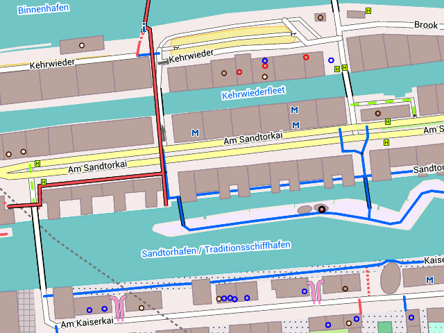
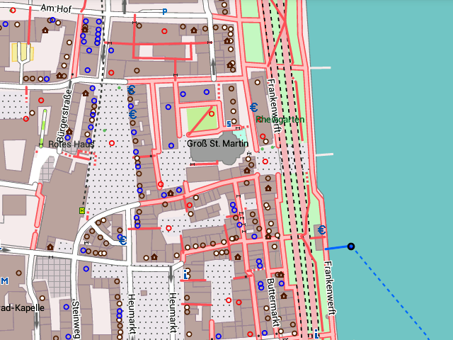

Basisdaten der Freizeitkarten
Die Freizeitkarten (Ausgabe 14.02) basieren auf den OpenStreetMap-Daten vom 10.02.2014. Danke an alle Mapper die Daten hierzu beigetragen haben.
Erste offizielle Ausgabe
Dies ist die erste "offizielle" Kartenausgabe der Freizeitkarten-Android. Entwickler die (Spezial-) Karten durch die Entwicklung eigener Themes ableiten möchten, sind hiermit eingeladen dies zu tun. Entsprechende Unterstützung wird zugesichert.
Verbesserungen in der Kartenausgabe 14.02 (erste offizielle Ausgabe):
- zusätzliche Darstellung von:
+ Parkbänken (optional; amenity=bench)
+ Grillplätzen (optional; amenity=bbq)
+ Recycling-Container, -Einrichtung (optional; amenity=recycling)
+ Mauern (allgemein, Stadtmauer, Stützmauer), Hecken
+ Baumreihen, Alleebäumen
+ Schleusen (Tor und Schleusenbereich)
+ Flächen von Strafvollzugseinrichtungen (amenity=prison)
+ umzäunten Flächen (fenced=yes)
- weitere Karten:
+ weitere europäische Länder
+ alle deutschen Bundesländer

Hamburg - viele Kartendetails im Hafengebiet.
Grundsätzliches
Die Freizeitkarten bestehen immer aus zwei Teilen:
- der (Mapsforge-) Karte (*.map-Datei)
- der Kartendarstellung (Design, Theme)
Download
Der Download einer Freizeitkarte oder eines Kartendesigns ist auf zwei Arten möglich:
| direkt auf den Personal-Computer | → |
|
| direkt in die Android-App Locus Map | → |
|
Hinweise
- Beim Download nach Locus Map werden größere Datenmengen direkt in dein Androidgerät geladen.
- Um den Download nach Locus Map zu starten, ist der entsprechende Link im Android-Browser zu wählen.

Köln - Innenstadt mit vielen Geschäften und Restaurants unmittelbar am Rhein.
Installation
Abhängig von der Art des Downloads und der verwendeten App gilt:
|
|
Karte + Design sind auf das Android-Gerät zu übertragen; abschließend ist das zu verwendende Design zu konfigurieren |
|
|
Karte + Design befinden sich bereits am richtigen Platz; abschließend ist das zu verwendende Design zu konfigurieren: "Karte auswählen → EXTERNE THEMEN → "freizeitkarte" |
Karte unter Locus Map (manuell) installieren
- Kartendownload entpacken
- Karte (*.map) ins Verzeichnis "Locus/mapsVector" kopieren
Design unter Locus Map (manuell) installieren
- Themedownload entpacken
- Theme-Verzeichnis "freizeitkarte" nach "Locus/mapsVector/_themes" kopieren
Karte unter Locus Map nutzen
- Karte auswählen: Karten-Symbol → Vektorkarten → Verzeichnis "Locus/mapsVector" auswählen → Freizeitkarte auswählen
- Theme auswählen: wie vor "Karte auswählen" → EXTERNE THEMEN → "freizeitkarte" auswählen
Karte unter OruxMaps installieren
- Kartendownload entpacken
- Karte (*.map) ins Verzeichnis "oruxmaps/mapfiles" kopieren
Theme unter OruxMaps installieren
- im Verzeichnis "oruxmaps" ein Unterverzeichnis "/mapstyles/FZK" anlegen
- den Inhalt des Themes dorthin kopieren
Das Ergebnis sollte dann so aussehen:
- oruxmaps/mapstyles/FZK/symbols/*.png
- oruxmaps/mapstyles/FZK/patterns/*.png
- oruxmaps/mapstyles/FZK/freizeitkarte.xml
Karte unter OruxMaps nutzen
- Karten-Symbol → Offline-Karte hier → Freizeitkarte auswählen
- Einstellungen → Anpassen → Mapsforge-Kartenstil → freizeitkarte.xml auswählen
Support-Forum:
Im Geoclub gibt es ein Support-Forum zu den Freizeitkarten, wo viele Kartennutzer und auch die Kartenbauer Hilfestellungen geben: Freizeitkarte Support-Forum